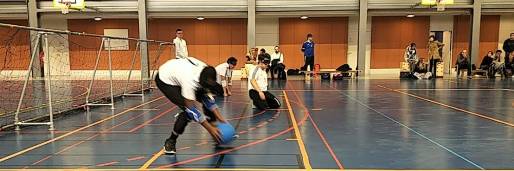

L'organisation de BienHêtre
L'association BienHêtre, fondée en avril 2015, se situe au 158, rue Jean-Mermoz, à Soisy-Sous-Montmorency. Elle a pour mission de favoriser l'insertion des personnes handicapées de tout âge dans leur vie professionnelle et quotidienne. En mettant l'accent sur des valeurs telles que le partage, le bien-être, l'esprit d'équipe, l'échange, le rapport humain et l'estime de soi, BienHêtre crée un environnement inclusif et solidaire. Ces valeurs fondamentales sont au cœur de toutes les initiatives de l'association, visant à promouvoir l'intégration et l'épanouissement des personnes en situation de handicap.
Les démarches de BienHêtre
BienHêtre propose une variété d'activités et de programmes pour soutenir ses membres. Les activités sportives et de loisirs, comme le Showdown, le Torball et le Goalball, sont conçues pour être accessibles aux personnes handicapées, tout en favorisant la cohésion sociale et l'épanouissement personnel. Les programmes de formation et d'accompagnement incluent des séminaires et des sessions individualisées sur des sujets tels que l'accueil et l'accompagnement des personnes handicapées, l'adaptation des postes de travail et la gestion des relations interpersonnelles. De plus, l'association organise des ateliers de sensibilisation, offrant des expériences immersives pour mieux comprendre les défis quotidiens des personnes handicapées. Ces ateliers sont animés par des intervenants eux-mêmes en situation de handicap, garantissant une perspective authentique et impactante.
Showdown
Description du sport Showdown.
Torball
Description du sport Torball.

Goalball
Description du sport Goalball.
Previous
Next
Le public de BienHêtre
L'association BienHêtre s'adresse principalement aux personnes en situation de handicap de tout âge, mais elle accueille également les personnes valides souhaitant participer à ses activités et ateliers de sensibilisation. En outre, elle travaille en étroite collaboration avec des entreprises et des organisations cherchant à mieux intégrer et accompagner les personnes handicapées dans leurs environnements professionnels. Les professionnels de la santé, de l'éducation et du secteur social bénéficient également des formations et des conseils offerts par BienHêtre. Les familles et les proches des personnes handicapées trouvent un soutien précieux dans les activités de l'association, qui visent à promouvoir l'inclusion et la compréhension des handicaps. En encourageant le développement personnel et l'estime de soi des participants, BienHêtre joue un rôle essentiel dans la création d'une société plus inclusive et accueillante.